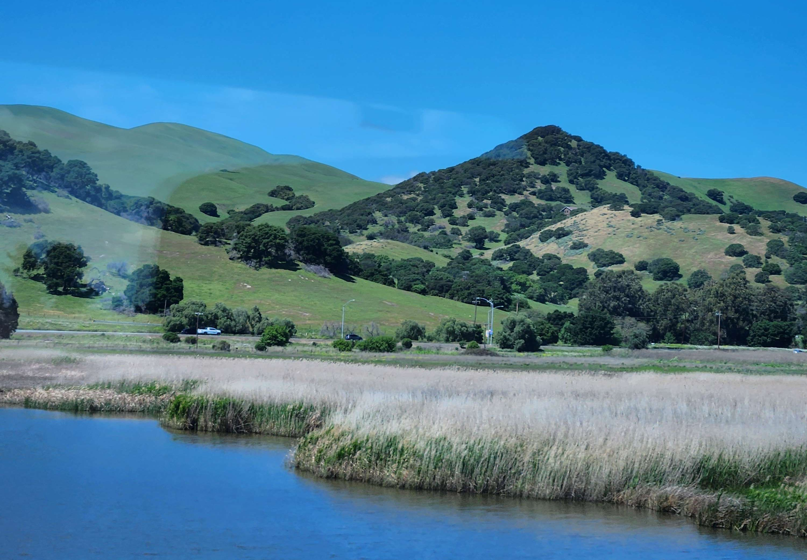
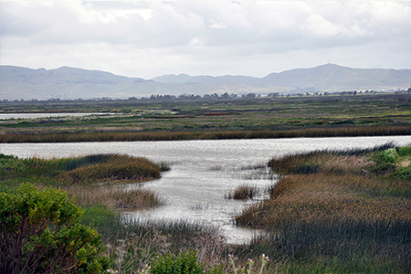
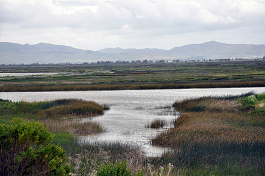
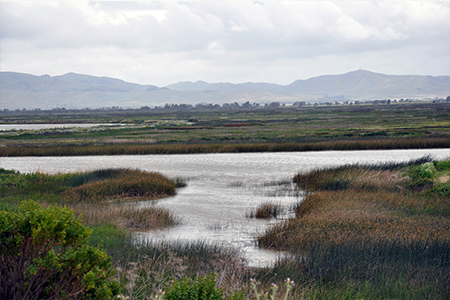

if you are viewing this webpage on Firefox, click the "reimagine" button to see the full view!
Experiment 2 - Wetlands through the Window
Description

 


Twice a week, I take the Capitol Corridor train to get between Sacramento and San Jose, and twice a week I watch rapty as we pass through Suisun marsh, a lovely stretch
of landscape between Suisun and Martinez. It's a beautiful view no matter the weather, but I particularly love it when the water is like a mirror to the sky above. For this experiment,
I wanted to try to capture this -- my favorite part of a long, long commute -- in procedural perpetuity with an infinite scroll.
Technical
This experiment uses p5.js' native noise() functionality for marsh, sky, and hill generation. The marsh grass colors were approximated by eye, and later refined by picking a nice shade of green and completing an inspired palette using mycolor.space. The trees are rendered with triangle primitives. The hillside is a polygon generated using vertex calls with perlin noise values, and the sky and marshlands are generated using perlin noise and filling specified color regions. The forced perspective effects on the sky and marsh are achieved by scaling their noise outputs along the y-axis. The marsh and hills infinitely scroll to emulate looking out a window on a train ride (which inspired this project in the first place -- ride Amtrak!).
Reflection
I'm very happy with how this turned out! I wanted to make something that felt like I was perpetually passing through my favorite part of my bi-weekly commute, and I achieved that. I think the style and texturizing I added toward the end took it to a whole new level, making it look like something I might sit down and paint in photoshop. Although I've worked with noise generation before, I definitely pushed the limits of my own understanding of the technique, and I was able to apply it in unique ways for the three main structures (sky, hills, marsh) in my experiment. One way that my code needs improvement is in efficiency; the code is slow to load, and resizing is buggy. Overall though, I''m proud of the outcome!.